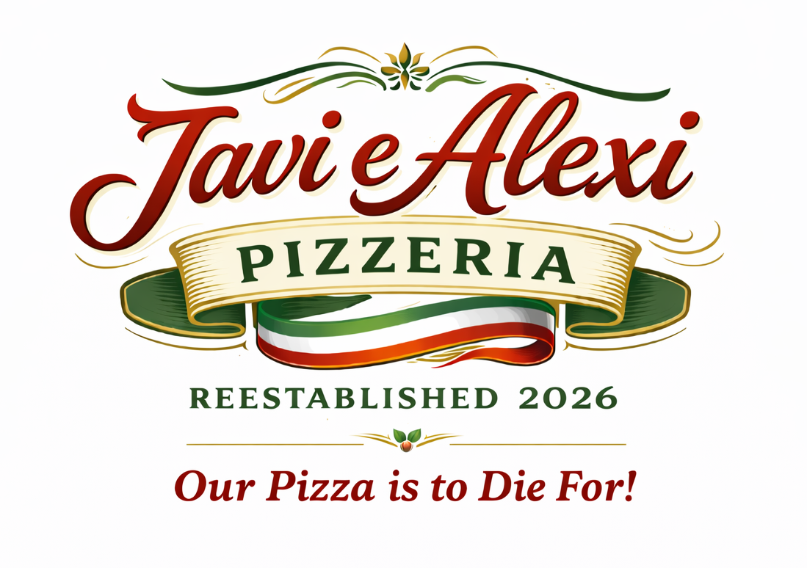
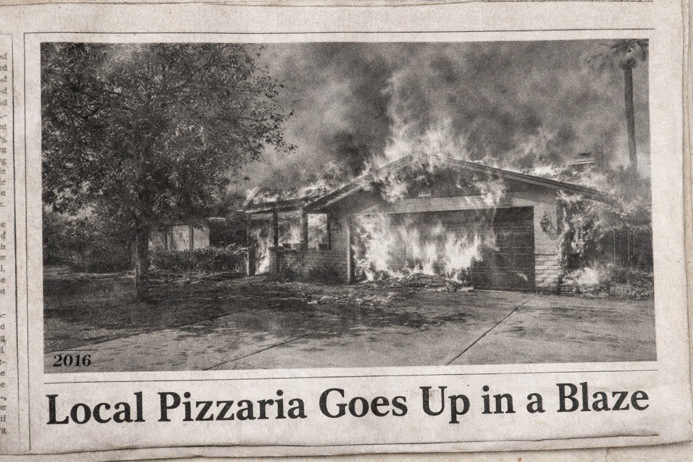

Welcome to Andrea’s 40th Birthday Celebration
Hosted by Javi e Alexi Pizzeria
1106 E Westchester Dr.
Tempe, AZ 85283
Tonight we gather to celebrate Andrea, good company, and the long-awaited grand reopening of Javi e Alexi Pizzeria — a beloved institution rising once again from the ashes of its past.

Once known as Valentino’s Inferno, the restaurant’s history includes ambition, expansion, and an unexpected fire that left more questions than answers. As friends, partners, rivals, and community figures connected to the pizzeria’s legacy, you’ve each been invited to enjoy food, drink, and lively conversation… though some stories may resurface along the way.
Your Role
You will embody a guest connected in some way to the restaurant’s past or present — whether through business, politics, friendship, competition, or curiosity. Lean into your character, engage with others, and pay attention to the details that emerge throughout the evening.
After all, every grand reopening carries a bit of history — and history has a way of speaking up.